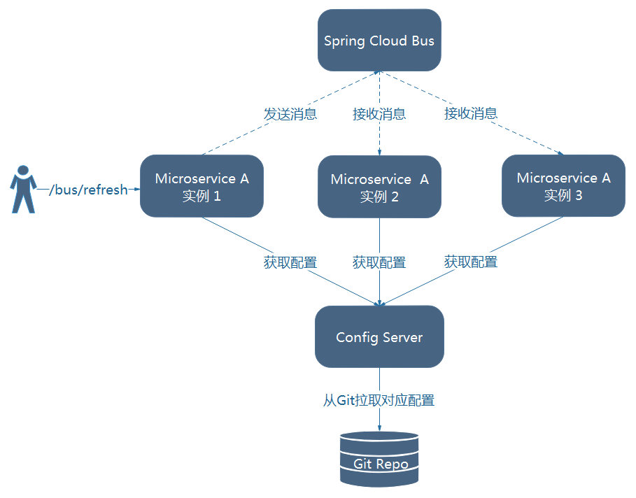
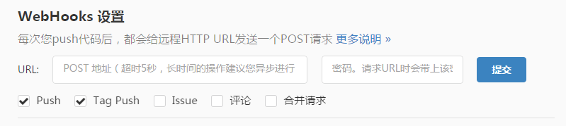
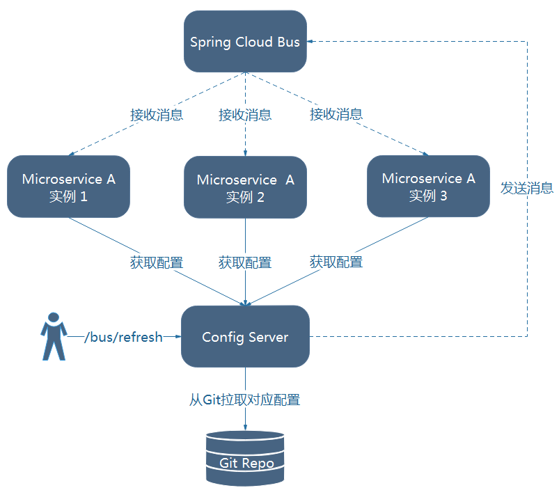

<!DOCTYPE HTML>
<html lang="zh-CN">
<head><meta name="generator" content="Hexo 3.8.0">
    <!--Setting-->
    <meta charset="UTF-8">
    <meta name="viewport" content="width=device-width, user-scalable=no, initial-scale=1.0, maximum-scale=1.0, minimum-scale=1.0">
    <meta http-equiv="X-UA-Compatible" content="IE=Edge,chrome=1">
    <meta http-equiv="Cache-Control" content="no-siteapp">
    <meta http-equiv="Cache-Control" content="no-transform">
    <meta http-equiv="pragma" content="no-cache">
    <meta http-equiv="Cache-Control" content="no-cache, must-revalidate">
    <meta http-equiv="expires" content="Mon Apr 06 2020 02:12:40 GMT+0800 (CST)">
    <meta name="renderer" content="webkit|ie-comp|ie-stand">
    <meta name="apple-mobile-web-app-capable" content="张万众的博客 - 关注Spring Cloud、Docker">
    <meta name="apple-mobile-web-app-status-bar-style" content="black">
    <meta name="format-detection" content="telephone=no,email=no,adress=no">
    <meta name="browsermode" content="application">
    <meta name="screen-orientation" content="portrait">
    <meta name="theme-version" content="1.2.3">
    <meta name="root" content="/">
    
    <!--SEO-->

    <meta name="keywords" content="Spring Cloud,Spring Cloud Config,配置中心">


    <meta name="description" content="前文我们讨论了使用/refresh 端点手动刷新配置，但是如果所有微服务节点的配置都需要手动去刷新的话，那必然是一个繁琐的工作，并且随着系统的不断扩张，会变得越来越难以维护。因此，实现配置的自动刷新是很有必要的，本节我们讨论使用Spring Cloud Bus实现配置的自动刷新。
Spring...">


<meta name="robots" content="all">
<meta name="google" content="all">
<meta name="googlebot" content="all">
<meta name="verify" content="all">
    <!--Title-->


<title>Config Server——使用Spring Cloud Bus自动刷新配置 | 张万众的博客 - 关注Spring Cloud、Docker</title>


    <link rel="alternate" href="../../atom.html" title="张万众的博客 - 关注Spring Cloud、Docker" type="application/atom+xml">


    

    


<link rel="stylesheet" href="../../static/css/bootstrap.min-271a649e0635d6fa1b.css">
<link rel="stylesheet" href="../../static/css/font-awesome.min-ac2bebcf7fb5b26.css">
<link rel="stylesheet" href="../../static/css/style-6f3c140f6eee20e6591da00ec0.css">


    


    <script>
        var _hmt = _hmt || [];
        (function() {
            var hm = document.createElement("script");
            hm.src = "https://hm.baidu.com/hm.js?13766878cde148282622871dd245a973";
            var s = document.getElementsByTagName("script")[0];
            s.parentNode.insertBefore(hm, s);
        })();
    </script>


    

</head>

</html>
<!--[if lte IE 8]>
<style>
    html{ font-size: 1em }
</style>
<![endif]-->
<!--[if lte IE 9]>
<div style="ie">你使用的浏览器版本过低，为了你更好的阅读体验，请更新浏览器的版本或者使用其他现代浏览器，比如Chrome、Firefox、Safari等。</div>
<![endif]-->

<body>
    
    <nav class="main-navigation">
    <div class="container">
        <div class="row clearfix">
            <div class="col-md-12 column">
                <nav class="navbar navbar-default" style="background-color:#fff;border:0;margin-bottom:0" role="navigation">
                    <div class="navbar-header">
                        <button type="button" class="navbar-toggle" data-toggle="collapse" data-target="#navbar-collapse-1">
                            <span class="sr-only">切</span>
                            <span class="icon-bar"></span>
                            <span class="icon-bar"></span>
                            <span class="icon-bar"></span>
                        </button>
                        <a class="logo" href="../../index.html">
                            张万众的博客
                        </a>
                    </div>

                    <div class="collapse navbar-collapse" style="border:0;" id="navbar-collapse-1">
                        <ul class="nav navbar-nav">
                            
                                
                                    <li>
                                        <a href="../../about.html" target="_blank">
                                            <i class="fa fa-user"></i>
                                            关于我
                                        </a>
                                    </li>
                                
                            
                                
                                    <li>
                                        <a href="../../archives.html" target="_blank">
                                            <i class="fa fa-archive"></i>
                                            归档
                                        </a>
                                    </li>
                                
                            
                                
                                    <li class="dropdown">
                                        <a href="#" class="dropdown-toggle" data-toggle="dropdown" data-hover="dropdown">
                                            <i class="fa fa-fire"></i>
                                            系列课程
                                            <strong class="caret"></strong>
                                        </a>
                                        <ul class="dropdown-menu">
                                            
                                                <li>
                                                    <a href="../../docker/00-docker-lession-index.html" target="_blank">
                                                        <i class="fa "></i>
                                                        Docker系列教程
                                                    </a>
                                                </li>
                                            
                                                <li>
                                                    <a href="../spring-cloud-index.html" target="_blank">
                                                        <i class="fa "></i>
                                                        Spring Cloud系列教程
                                                    </a>
                                                </li>
                                            
                                                <li>
                                                    <a href="../../spring-boot/spring-boot-index.html" target="_blank">
                                                        <i class="fa "></i>
                                                        Spring Boot系列教程
                                                    </a>
                                                </li>
                                            
                                        </ul>
                                    </li>
                                
                            
                                
                                    <li class="dropdown">
                                        <a href="#" class="dropdown-toggle" data-toggle="dropdown" data-hover="dropdown">
                                            <i class="fa fa-book"></i>
                                            开源书
                                            <strong class="caret"></strong>
                                        </a>
                                        <ul class="dropdown-menu">
                                            
                                                <li>
                                                    <a href="../../books/rocketmq.html" target="_blank">
                                                        <i class="fa fa-rocket"></i>
                                                        RocketMQ开发者指南
                                                    </a>
                                                </li>
                                            
                                                <li>
                                                    <a href="../../books/skywalking.html" target="_blank">
                                                        <i class="fa fa-skyatlas"></i>
                                                        Skywalking 6.2.0中文文档
                                                    </a>
                                                </li>
                                            
                                        </ul>
                                    </li>
                                
                            
                                
                                    <li class="dropdown">
                                        <a href="#" class="dropdown-toggle" data-toggle="dropdown" data-hover="dropdown">
                                            <i class="fa fa-cog"></i>
                                            工具
                                            <strong class="caret"></strong>
                                        </a>
                                        <ul class="dropdown-menu">
                                            
                                                <li>
                                                    <a href="../../tools/markdown2.html" target="_blank">
                                                        <i class="fa "></i>
                                                        微信排版工具2.0
                                                    </a>
                                                </li>
                                            
                                        </ul>
                                    </li>
                                
                            
                        </ul>
                        
                            <form id="search-form" class="navbar-form navbar-right">
                                <div class="form-group input-group">
                                    <input type="text" id="local-search-input" class="form-control" placeholder="搜我...">
                                    <span class="input-group-btn">
                                        <a class="btn btn-default">
                                            <i class="fa fa-search"></i>
                                        </a>
                                    </span>
                                </div>
                                <div id="local-search-result" class="local-search-result-cls"></div>
                            </form>
                        
                    </div>
                </nav>
            </div>
        </div>
    </div>
</nav>

    <a href="javascript:;" target="_blank">
        
    </a>


    <section class="content-wrap">
        <div class="container">
            <div class="row">
                <main class="col-md-8 main-content m-post">
                    

<p id="process"></p>
<article class="post">
    <div class="post-head">
        <h1 id="Config Server——使用Spring Cloud Bus自动刷新配置">
            
                Config Server——使用Spring Cloud Bus自动刷新配置
            
        </h1>
        <div class="post-meta">
    
        <span class="categories-meta fa-wrap">
            <i class="fa fa-folder-open-o"></i>
            <a class="category-link" href="javascript:;">Spring Cloud</a>
        </span>
    

    
        <span class="fa-wrap">
            <i class="fa fa-tags"></i>
            <span class="tags-meta">
                
                    <a class="tag-link" href="javascript:;">Spring Cloud</a> <a class="tag-link" href="javascript:;">Spring Cloud Config</a> <a class="tag-link" href="../../tags/配置中心/index.html">配置中心</a>
                
            </span>
        </span>
    

    
        
        <span class="fa-wrap">
            <i class="fa fa-clock-o"></i>
            <span class="date-meta">2017/01/07</span>
        </span>
        
            <span class="fa-wrap">
                <i class="fa fa-eye"></i>
                <span id="busuanzi_value_page_pv"></span>
            </span>
        
    
</div>
        
        
    </div>
    
    <div class="post-body post-content" id="post-content">
        
    <div class="toc-article">
        <strong>
            目录
        </strong>
        <div class="toc-content">
            <ol class="toc"><li class="toc-item toc-level-2"><a class="toc-link" href="#测试"><span class="toc-text">测试</span></a></li><li class="toc-item toc-level-2"><a class="toc-link" href="#局部刷新"><span class="toc-text">局部刷新</span></a></li><li class="toc-item toc-level-2"><a class="toc-link" href="#架构改进"><span class="toc-text">架构改进</span></a></li><li class="toc-item toc-level-2"><a class="toc-link" href="#跟踪总线事件"><span class="toc-text">跟踪总线事件</span></a></li></ol>
        </div>
    </div>


        <p>前文我们讨论了使用<code>/refresh</code> 端点手动刷新配置，但是如果所有微服务节点的配置都需要手动去刷新的话，那必然是一个繁琐的工作，并且随着系统的不断扩张，会变得越来越难以维护。因此，实现配置的自动刷新是很有必要的，本节我们讨论使用Spring Cloud Bus实现配置的自动刷新。</p>
<p>Spring Cloud Bus提供了批量刷新配置的机制，它使用轻量级的消息代理（例如RabbitMQ、Kafka等）连接分布式系统的节点，这样就可以通过Spring Cloud Bus广播配置的变化或者其他的管理指令。使用Spring Cloud Bus后的架构如图9-2所示。<br><a id="more"></a></p>
<p></p>
<p>图9-2 使用Spring Cloud Bus的架构图</p>
<p>由图可知，微服务A的所有实例通过消息总线连接到了一起，每个实例都会订阅配置更新事件。当其中一个微服务节点的/bus/refresh端点被请求时，该实例就会向消息总线发送一个配置更新事件，其他实例获得该事件后也会更新配置。</p>
<p>下面我们以RabbitMQ为例，为大家讲解如何使用Spring Cloud Bus实现配置的自动刷新。</p>
<p>(1) 安装RabbitMQ。RabbitMQ的安装非常简单，本书不再赘述。</p>
<p>(2) 复制项目<code>microservice-config-client-refresh</code> ，将ArtifactId修改为<code>microservice-config-client-refresh-cloud-bus</code> 。</p>
<p>(3) 为项目添加<code>spring-cloud-starter-bus-amqp</code> 的依赖。</p>
<figure class="highlight xml"><table><tr><td class="gutter"><pre><span class="line">1</span><br><span class="line">2</span><br><span class="line">3</span><br><span class="line">4</span><br></pre></td><td class="code"><pre><span class="line"><span class="tag">&lt;<span class="name">dependency</span>&gt;</span></span><br><span class="line">    <span class="tag">&lt;<span class="name">groupId</span>&gt;</span>org.springframework.cloud<span class="tag">&lt;/<span class="name">groupId</span>&gt;</span></span><br><span class="line">    <span class="tag">&lt;<span class="name">artifactId</span>&gt;</span>spring-cloud-starter-bus-amqp<span class="tag">&lt;/<span class="name">artifactId</span>&gt;</span></span><br><span class="line"><span class="tag">&lt;/<span class="name">dependency</span>&gt;</span></span><br></pre></td></tr></table></figure>
<p>(4) 在bootstrap.yml中添加以下内容：</p>
<figure class="highlight plain"><table><tr><td class="gutter"><pre><span class="line">1</span><br><span class="line">2</span><br><span class="line">3</span><br><span class="line">4</span><br><span class="line">5</span><br><span class="line">6</span><br></pre></td><td class="code"><pre><span class="line">spring:</span><br><span class="line">  rabbitmq:</span><br><span class="line">    host: localhost</span><br><span class="line">    port: 5672</span><br><span class="line">    username: guest</span><br><span class="line">    password: guest</span><br></pre></td></tr></table></figure>
<p>这样代码就改造完成了。</p>
<h2 id="测试"><a href="#测试" class="headerlink" title="测试"></a>测试</h2><p>(1) 启动microservice-config-server</p>
<p>(2) 启动microservice-config-client-refresh-cloud-bus，可发现此时控制台打印类似于以下的内容：</p>
<figure class="highlight plain"><table><tr><td class="gutter"><pre><span class="line">1</span><br></pre></td><td class="code"><pre><span class="line">[           main] o.s.b.a.e.mvc.EndpointHandlerMapping     : Mapped &quot;&#123;[/bus/refresh],methods=[POST]&#125;&quot; onto public void org.springframework.cloud.bus.endpoint.RefreshBusEndpoint.refresh(java.lang.String)</span><br></pre></td></tr></table></figure>
<p>说明此时有一个<code>/bus/refresh</code> 端点。</p>
<p>(3) 将microservice-config-client-refresh-cloud-bus的端口改成8082，再启动一个节点。</p>
<p>(4) 访问<a href="javascript:;" target="_blank" rel="noopener">http://localhost:8081/profile</a> ，可获得结果：dev-1.0。</p>
<p>(4) 将git仓库中的microservice-foo-dev.properties文件内容改为<code>profile=dev-1.0-bus</code> </p>
<p>(5) 发送POST请求到其中一个Config Client节点的的/bus/refresh端点，例如：</p>
<figure class="highlight shell"><table><tr><td class="gutter"><pre><span class="line">1</span><br></pre></td><td class="code"><pre><span class="line">curl -X POST http://localhost:8081/bus/refresh</span><br></pre></td></tr></table></figure>
<p>(6) 访问两个Config Client节点的/profile端点，会发现两个节点都会返回<code>dev-1.0-bus</code> ，说明配置内容已被刷新。</p>
<p>借助Git仓库的WebHook，我们就可轻松实现配置的自动刷新。如图9-3所示。</p>
<p></p>
<p>图9-3 Git WebHooks设置</p>
<h2 id="局部刷新"><a href="#局部刷新" class="headerlink" title="局部刷新"></a>局部刷新</h2><p>某些场景下（例如灰度发布），我们可能只想刷新部分微服务的配置，此时可通过/bus/refresh端点的destination参数来定位要刷新的应用程序。</p>
<p>例如：<code>/bus/refresh?destination=customers:9000</code>  ，这样消息总线上的微服务实例就会根据destination参数的值来判断是否需要要刷新。其中，<code>customers:9000</code> 指的是各个微服务的ApplicationContext ID。</p>
<p>destination参数也可以用来定位特定的微服务。例如：<code>/bus/refresh?destination=customers:**</code> ，这样就可以触发customers微服务所有实例的配置刷新。</p>
<p><strong>扩展阅读：关于ApplicationContext ID</strong></p>
<p>默认情况下，ApplicationContext ID是spring.application.name:server.port，详见<code>org.springframework.boot.context.ContextIdApplicationContextInitializer.getApplicationId(ConfigurableEnvironment)</code> 方法。</p>
<p><a href="../../spring-cloud-code-read/spring-cloud-code-read-spring-cloud-bus/index.html">http://www.itmuch.com/spring-cloud-code-read/spring-cloud-code-read-spring-cloud-bus/</a></p>
<h2 id="架构改进"><a href="#架构改进" class="headerlink" title="架构改进"></a>架构改进</h2><p>在前面的示例中，我们通过请求某个微服务的/bus/refresh端点的方式来实现配置刷新，但这种方式并不优雅。原因如下：</p>
<p>(1) 打破了微服务的职责单一性。微服务本身是业务模块，它本不应该承担配置刷新的职责。</p>
<p>(2) 破坏了微服务各节点的对等性。</p>
<p>(3) 有一定的局限性。例如，微服务在迁移时，它的网络地址常常会发生变化，此时如果想要做到自动刷新，那就不得不修改WebHook的配置。</p>
<p>我们不妨改进一下我们的架构。</p>
<p></p>
<p>图9-4 使用Spring Cloud Bus的架构图</p>
<p>如图9-4，我们将Config Server也加入到消息总线中，并使用Config Server的/bus/refresh端点来实现配置的刷新。这样，各个微服务只需要关注自身的业务，而不再承担配置刷新的职责。代码详见<code>microservice-config-server-refresh-cloud-bus</code> 。</p>
<h2 id="跟踪总线事件"><a href="#跟踪总线事件" class="headerlink" title="跟踪总线事件"></a>跟踪总线事件</h2><p>一些场景下，我们可能希望知道Spring Cloud Bus事件传播的细节。此时，我们可以跟踪总线事件（RemoteApplicationEvent的子类都是总线事件）。</p>
<p>跟踪总线事件非常简单，只需设置<code>spring.cloud.bus.trace.enabled=true</code> ，这样在/bus/refresh端点被请求后，访问/trace端点就可获得类似如下的结果：</p>
<figure class="highlight"><table><tr><td class="gutter"><pre><span class="line">1</span><br><span class="line">2</span><br><span class="line">3</span><br><span class="line">4</span><br><span class="line">5</span><br><span class="line">6</span><br><span class="line">7</span><br><span class="line">8</span><br><span class="line">9</span><br><span class="line">10</span><br><span class="line">11</span><br><span class="line">12</span><br><span class="line">13</span><br><span class="line">14</span><br><span class="line">15</span><br><span class="line">16</span><br><span class="line">17</span><br><span class="line">18</span><br><span class="line">19</span><br></pre></td><td class="code"><pre><span class="line">&#123;</span><br><span class="line">  <span class="attr">"timestamp"</span>: <span class="number">1481098786017</span>,</span><br><span class="line">  <span class="attr">"info"</span>: &#123;</span><br><span class="line">    <span class="attr">"signal"</span>: <span class="string">"spring.cloud.bus.ack"</span>,</span><br><span class="line">    <span class="attr">"event"</span>: <span class="string">"RefreshRemoteApplicationEvent"</span>,</span><br><span class="line">    <span class="attr">"id"</span>: <span class="string">"66d172e0-e770-4349-baf7-0210af62ea8d"</span>,</span><br><span class="line">    <span class="attr">"origin"</span>: <span class="string">"microservice-foo:8081"</span>,</span><br><span class="line">    <span class="attr">"destination"</span>: <span class="string">"**"</span></span><br><span class="line">  &#125;</span><br><span class="line">&#125;,&#123;</span><br><span class="line">  "timestamp": 1481098779073,</span><br><span class="line">  "info": &#123;</span><br><span class="line">    "signal": "spring.cloud.bus.sent",</span><br><span class="line">	"type": "RefreshRemoteApplicationEvent",</span><br><span class="line">	"id": "66d172e0-e770-4349-baf7-0210af62ea8d",</span><br><span class="line">	"origin": "microservice-config-server:8080",</span><br><span class="line">	"destination": "**:**"</span><br><span class="line">  &#125;</span><br><span class="line">&#125;...</span><br></pre></td></tr></table></figure>
<p>这样，我们就可清晰地知道事件的传播细节。</p>

        <h2>相关文章</h2><ul><li><a href="../config-server-encrypt-decrypt/index.html">Config Server——配置内容的加密与解密</a></li><li><a href="../finchley-20/index.html">跟我学Spring Cloud（Finchley版）-20-Spring Cloud Config-Git仓库配置详解</a></li><li><a href="../finchley-19/index.html">跟我学Spring Cloud（Finchley版）-19-配置中心-Spring Cloud Config</a></li><li><a href="../finchley-21/index.html">跟我学Spring Cloud（Finchley版）-21-Spring Cloud Config-配置属性加解密</a></li><li><a href="../finchley-22/index.html">跟我学Spring Cloud（Finchley版）-22-Spring Cloud Config-配置动态刷新</a></li></ul>
    </div>
    
    <div class="post-footer">
        <div class="col-sm-10">
            <div>
                <b>本文链接</b>：<a href="" target="_blank">Config Server——使用Spring Cloud Bus自动刷新配置</a>
            </div>
            <div>
                
                    转载声明：本博客由张万众创作，采用 <a href="javascript:;" target="_blank"> CC BY 3.0 CN </a> 许可协议。可自由转载、引用，但需署名作者且注明文章出处。如转载至微信公众号，请在文末添加作者公众号二维码。
                
            </div>
            <div>
                
            </div>
        </div>
        <div class="col-sm-2">
            
        </div>
    </div>
</article>

<div class="article-nav prev-next-wrap clearfix">
    
        <a target="_blank" href="../../work/simple-standard-log/index.html" class="pre-post btn btn-default" title="最简日志打印规范">
            <i class="fa fa-angle-left fa-fw"></i><span class="hidden-lg">上一篇</span>
            <span class="hidden-xs">最简日志打印规范</span>
        </a>
    
    
        <a target="_blank" href="../../spring-cloud-sum/feign-multiple-params/index.html" class="next-post btn btn-default" title="如何使用Feign构造多参数的请求">
            <span class="hidden-lg">下一篇</span>
            <span class="hidden-xs">如何使用Feign构造多参数的请求</span><i class="fa fa-angle-right fa-fw"></i>
        </a>
    
</div>


    <div id="comments">
        
   <p>评论系统未开启，无法评论！</p>

    </div>


                </main>
                
    <aside class="col-md-4 sidebar">
        
        <div class="widget about-me">
    <div class="row">
        <div class="col-md-5">
            
        </div>
        <div class="col-md-7">
            <a class="series-a" href="javascript:void(0)">公众号</a>
            <ul>
                <li>• 技术干货推送</li>
                <li>• 免费资料领取</li>
                <li><b>• 扫码领取更多惊喜</b></li>
            </ul>
        </div>
    </div>
    
        <div class="row">
            <div class="col-md-5">
                
            </div>
            <div class="col-md-7">
                <a class="series-a" href="javascript:void(0)">小程序</a>
                <ul>
                    <li>• 原创笔记</li>
                    <li>• 独家心法</li>
                    <li><b>• 扫码领取</b></li>
                </ul>
            </div>
        </div>
    
</div>


        
        
    <div class="ad">
        <div class="row">
            <div class="col-md-12">
                <a href="javascript:;" rel="nofollow" target="_blank">
                    
                </a>
            </div>
        </div>
    </div>


        
        <div class="widget">
    <div class="row">
        <div class="col-md-3">
            
        </div>
        <div class="col-md-9">
            <a class="series-a" target="_blank" href="../spring-cloud-index.html">Spring Cloud系列教程</a>
            <p>全面、通俗易懂的Spring Cloud教程</p>
        </div>
    </div>
    <div class="row">
        <div class="col-md-3">
            
        </div>
        <div class="col-md-9">
            <a class="series-a" target="_blank" href="javascript:;">Spring Cloud Alibaba视频教程</a>
            <p>全网唯一，你值得拥有</p>
        </div>
    </div>
    <div class="row">
        <div class="col-md-3">
            
        </div>
        <div class="col-md-9">
            <a class="series-a" target="_blank" href="../../docker/00-docker-lession-index.html">Docker系列教程</a>
            <p>Docker系列</p>
        </div>
    </div>
    <div class="row">
        <div class="col-md-3">
            
        </div>
        <div class="col-md-9">
            <a class="series-a" target="_blank" href="../../spring-boot/spring-boot-index.html">Spring Boot系列教程</a>
            <p>Boot是基石...</p>
        </div>
    </div>
</div>


        
        
    <div class="widget">
        <h3 class="title">分类</h3>
        <ul class="category-list"><li class="category-list-item"><a class="category-list-link" href="javascript:;"><i class="fa" aria-hidden="true">Docker</i></a><span class="category-list-count">31</span></li><li class="category-list-item"><a class="category-list-link" href="javascript:;"><i class="fa" aria-hidden="true">Kubernetes</i></a><span class="category-list-count">2</span></li><li class="category-list-item"><a class="category-list-link" href="javascript:;"><i class="fa" aria-hidden="true">Spring Boot</i></a><span class="category-list-count">6</span></li><li class="category-list-item"><a class="category-list-link current" href="javascript:;"><i class="fa" aria-hidden="true">Spring Cloud</i></a><span class="category-list-count">94</span></li><li class="category-list-item"><a class="category-list-link" href="javascript:;"><i class="fa" aria-hidden="true">Spring Cloud Alibaba</i></a><span class="category-list-count">16</span></li><li class="category-list-item"><a class="category-list-link" href="javascript:;"><i class="fa" aria-hidden="true">Spring Cloud Stream</i></a><span class="category-list-count">1</span></li><li class="category-list-item"><a class="category-list-link" href="../../categories/其他/index.html"><i class="fa" aria-hidden="true">其他</i></a><span class="category-list-count">13</span></li><li class="category-list-item"><a class="category-list-link" href="../../categories/安装教程/index.html"><i class="fa" aria-hidden="true">安装教程</i></a><span class="category-list-count">7</span></li><li class="category-list-item"><a class="category-list-link" href="../../categories/工作/index.html"><i class="fa" aria-hidden="true">工作</i></a><span class="category-list-count">20</span></li></ul>
    </div>


        
        
        
        

        
    </aside>

            </div>
        </div>
    </section>
    <footer class="main-footer">
    <div class="container">
        <div class="row">
        </div>
    </div>
</footer>

<a id="back-to-top" class="icon-btn hide">
	<i class="fa fa-chevron-up"></i>
</a>


    <div class="copyright">
    <div class="container">
        <div class="row">
            <div class="col-sm-12">
                <div class="busuanzi">
    
        访问量:
        <strong id="busuanzi_value_site_pv">
            <i class="fa fa-spinner fa-spin"></i>
        </strong>
        &nbsp; | &nbsp;
        访客数:
        <strong id="busuanzi_value_site_uv">
            <i class="fa fa-spinner fa-spin"></i>
        </strong>
        &nbsp; <strong>Since 2018-12-26</strong>
    
</div>

            </div>
            <div class="col-sm-12">
                <span>Copyright &copy; 2017
                </span> |
                <span>
                    Powered by <a href="javascript:;" class="copyright-links" target="_blank" rel="nofollow">Hexo</a>
                </span> |
                <span>
                    Theme by <a href="javascript:;" class="copyright-links" target="_blank" rel="nofollow">ITMuch</a>
                </span>
            </div>
        </div>
    </div>
</div>

<script src="../../static/js/jquery.min.js"></script>
<script src="../../static/js/bootstrap.min.js"></script>
<script src="../../static/js/bootstrap-hover-dropdown.min.js"></script>

    <script src="../../static/js/search-3f4fbd0557c869ca0516ebb5f.js"></script>


    <script async="" src="../../static/js/busuanzi.pure.mini.js"></script>


<script src="../../static/js/app-da10bb3b2ae5c8348d2bd2cc3faf.js"></script>


</body>
